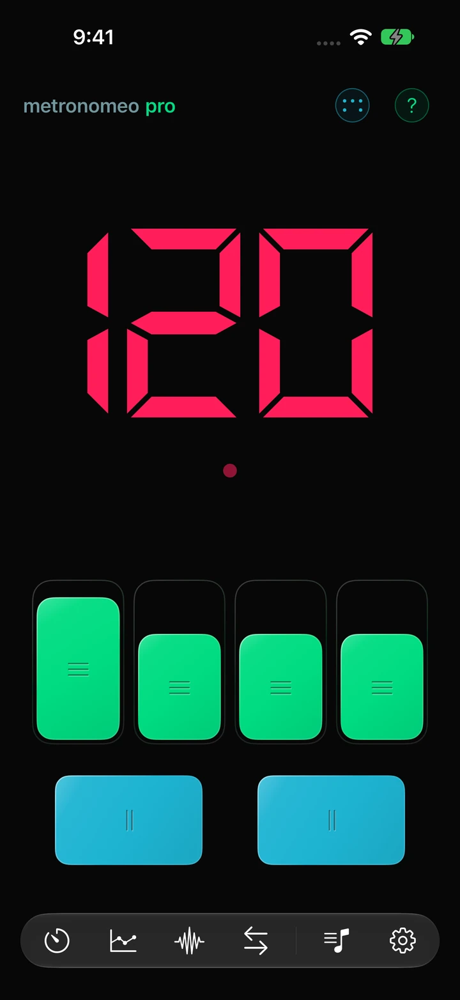
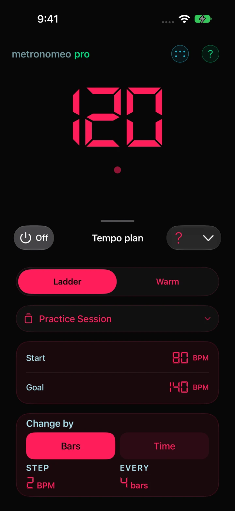
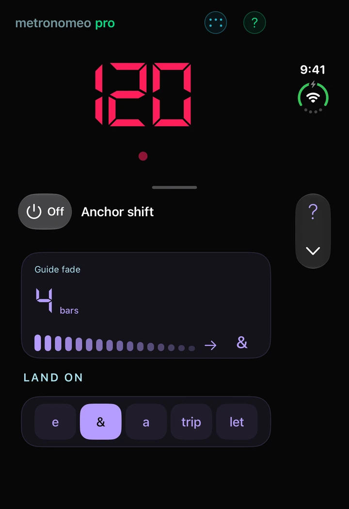
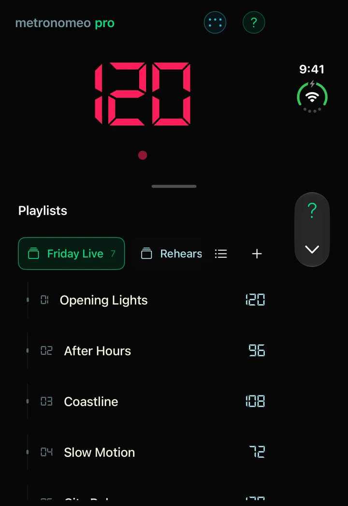

Serious depth.
Effortless control.
A powerful metronome for iPhone and iPad. Polyrhythms, spoken counting and practice tools in a clean, intuitive interface.
Download on theApp StoreMade for iPhone, iPhone Duo & iPad


Practice tools.
Build tempo ladders and warmups. Alternate audible and silent bars. Set a timer and focus on playing.
- Tempo plans
- Work toward your next tempo, one step at a time.
- Gap practice
- Keep time through silent bars.
- A timer with a purpose
- Choose a finishing sound, an automatic stop, or both.
ANCHOR SHIFT
Move the click.
Keep the beat.
Place the click on the e, & or a, or a triplet position. A fading guide helps you settle in before you hold the pulse yourself.
For drummers building independence, and any musician working on timing.
How to practice with a displaced click ↗
Shape your rhythm.
Shape accents and subdivisions. Play two rhythms against each other. Hear spoken numbers and subdivision words, or keep it percussive.

Your set, ready.
Keep songs and their rhythm settings together. Build a rehearsal playlist, move through a set, and pick up on another device with iCloud.
Advanced practice tools, Voice Count, playlists and connectivity are available with Metronomeo Pro.